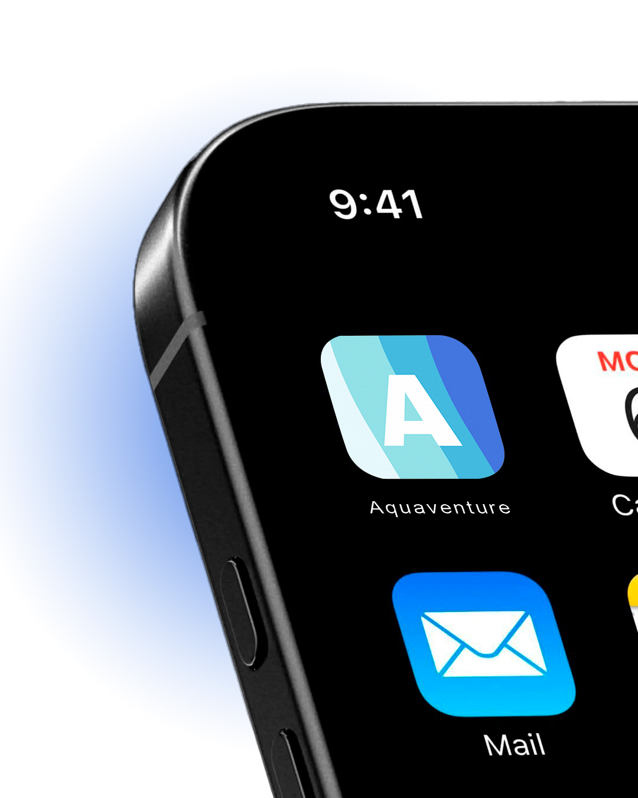
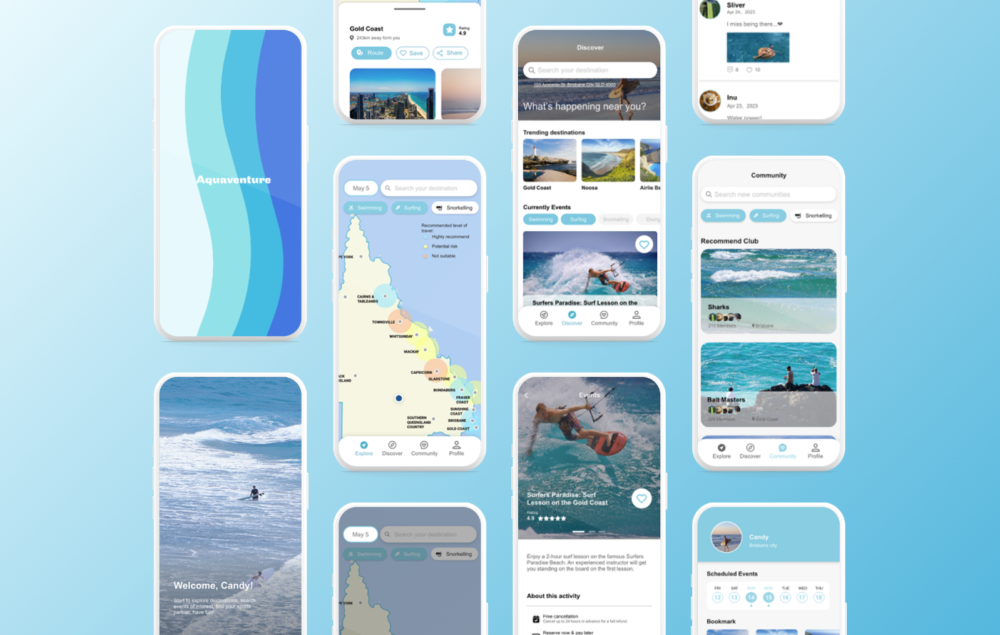
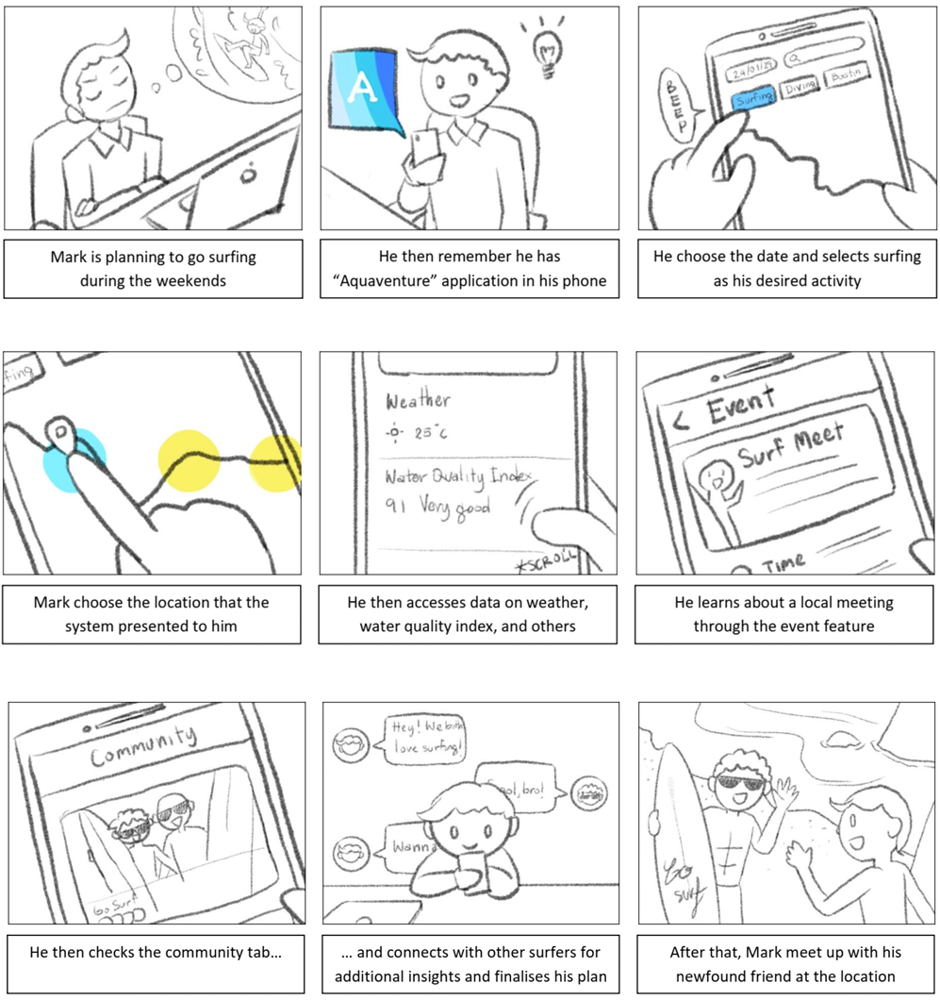
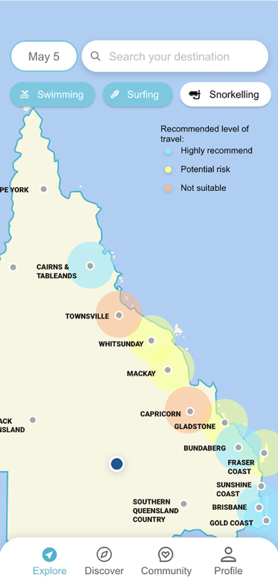
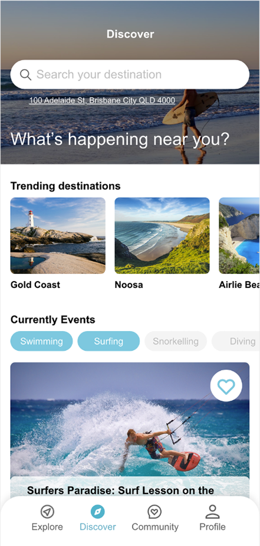
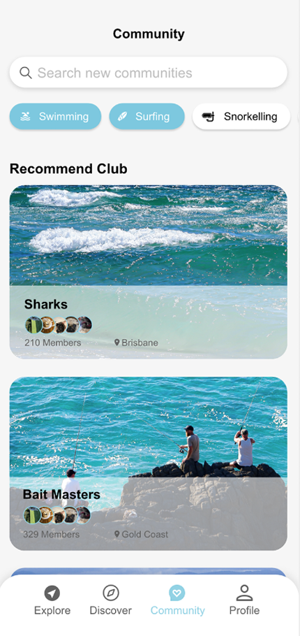

Aquaventure
Aquaventure is a mobile app designed to help water sports enthusiasts in Queensland choose safer and more suitable destinations.


Design Opportunity
Existing travel and activity platforms lack a dedicated focus on water sports safety and local conditions. Users often struggle to access real-time weather, water quality, and risk information, while also missing trusted local recommendations and community support. Aquaventure was designed to fill this gap by integrating safety data and social insights into a single, user-centred mobile experience.

THE INSIGHTS
- Majority of users do not participate in water sports alone.
- Beginners are likely to give up if they cannot find a partner.
- Many users expressed interest in meeting new people and exploring new locations together.

CORE FEATURES
Exploration
Users can select a date, location, and water sport to check real-time weather conditions and whether a destination is safe and suitable to visit.
Event Booking
The platform recommends relevant water sports activities based on users’ preferences and allows them to book and manage their itinerary in one place.
Social Connection
Users can connect with other water sports enthusiasts, make activity partners, and share water sport stories within the community.



DESIGN GUIDANCE
Arial
abcdefghijklmnopqrstuvwxyz ABCDEFGHIJKLMNOPQRSTUVWXYZ